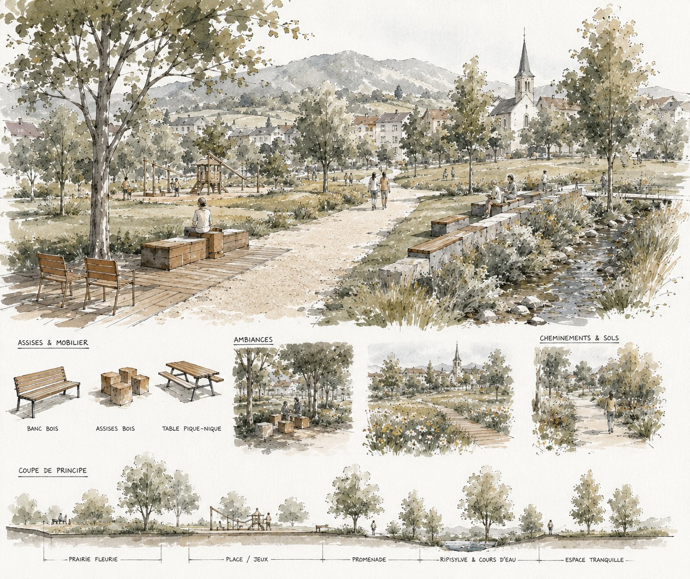
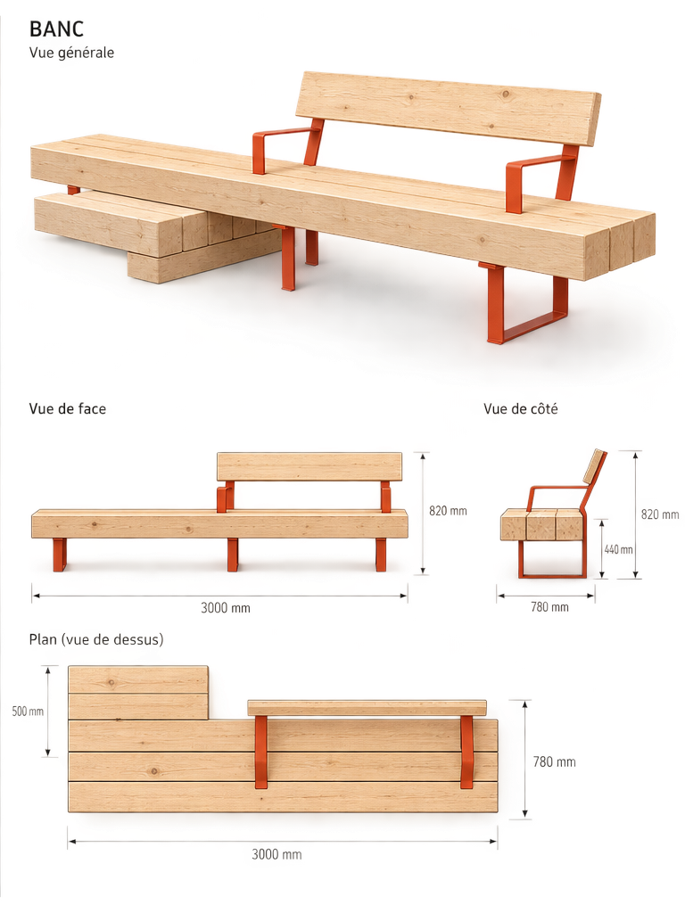

Linéo met en relation les collectivités publiques et les savoir-faire régionaux de la filière bois suisse, en circuit court, de la forêt à l'espace public !
Vous pourrez naviguer librement entre les deux espaces à tout moment depuis le bandeau supérieur.
Comment ça marche
Du besoin à l'installation de l'objet
Suivez le parcours d'un projet type sur Linéo, du premier besoin exprimé par une commune jusqu'au mobilier livré sur la place publique.
Créer un projet
Nouveau projet — Commune de Vucherens
Visibilité du projet
PublicVisible par tous les acteurs de la plateforme.
Acteurs concernésVisible selon les métiers liés aux objets du projet.
AnnulerCréer le projet

Commune de Vucherens
Aménagement du parc communal
CadrageVisibilité publique
45 000 CHF
Printemps 2027
Le site nécessite du mobilier d'assise et de repos le long du sentier forestier, ainsi qu'une signalétique d'orientation en entrée de parc.
Objets1 objet(s) associé(s)
Consortium6 acteur(s) impliqué(s)

Mobilier d'assise
Banc trois assises
ProduitPassif
180 cm
3 200 CHF
Banc massif taillé dans une seule pièce, assemblage sans quincaillerie apparente. Conçu pour un usage extérieur intensif en zone forestière ou périurbaine.
Épicéa
Mélèze
Chêne
Réalisations12 installée(s) sur le terrain
Plans3 document(s) technique(s)
Plans · Banc trois assises
Documents techniques
2 plan(s) associé(s) à cet objet
Plan bois — Assise et dossier
Pièces en bois massif : poutres d'assise (gradins) et planche dossier.
Exemple réel d'installation — le projet de Vucherens est encore en cadrage. Ce banc trois assises livré à Gland illustre le rendu une fois construit et posé.
Étape 1
Une collectivité publique crée un projet
Un élu ou un service technique complète le formulaire de création de projet : intitulé, budget, délais, besoins, et choisit son niveau de visibilité. Le projet est aussitôt rattaché au compte de sa collectivité.
Étape 2
A chaque projet peut être associé un ou plusieurs objets du catalogue
Depuis sa fiche projet, la commune ajoute un objet - ici un banc trois assises : dimensions, normes, coût indicatif, essences de bois compatibles, tout est déjà documenté.
Étape 3
Les plans techniques sont réutilisés, modifiés ou créés
Chaque module du banc dispose de plans validés prêts à être transmis aux prestataires, avec dimensions, matière et format normalisés.
Étape 4
Le porteur de projet lance un appel d'offre ou invite les prestataires de son choix
Pour chaque module défini dans les plans, la commune identifie les prestataires régionaux correspondants pour sa réalisation. La relation projet - prestataires est bidirectionnelle : un prestataire peut faire une offre pour tout ou partie d'un projet ; un porteur de projet peut solliciter un ou plusieurs prestataires spécifiques.
Étape 5
Au terme de l'appel d'offre un consortium est formé
Les prestataires sollicités confirment leur participation, module par module. Les acteurs et le porteur de projet s'organisent librement avec un suivi intégré à la plateforme.
Étape 6
Le mobilier réalisé est référencé
Une fois fabriqué, l'objet rejoint l'espace public. Chaque réalisation est géolocalisée et documentée.
Collectivités → Projets
Votre commune a un projet en tête ?
Linéo réunit déjà des communes des trois parcs, des plans réutilisables, un réseau d'acteurs locaux du bois et des réalisations installées sur le terrain.